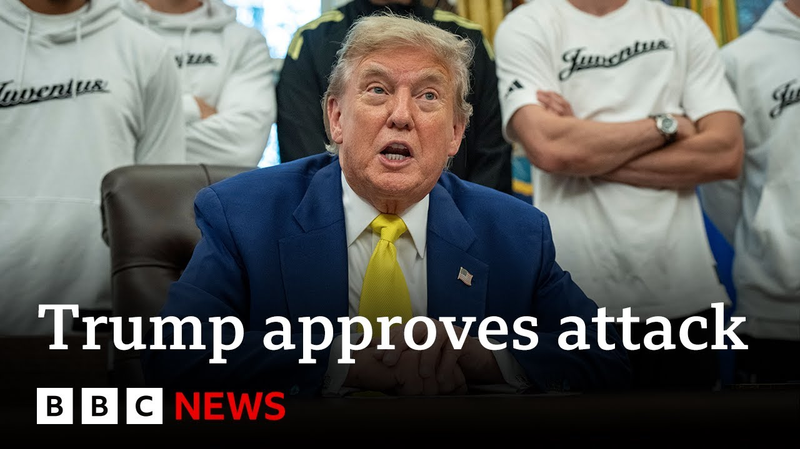

【特朗普批准攻击伊朗计划，CBS报道 | BBC新闻】
Summary: President Trump has approved plans to join Israel's attacks on Iran but is awaiting a final decision, while Iran's nuclear program and US military readiness remain key factors.
摘要： 特朗普总统已批准加入以色列对伊朗攻击的计划，但仍在等待最终决定，伊朗的核计划和美军战备状态仍是关键因素。

⏱️ Estimated Reading Time: 11 min
📚 六级生词 📚 雅思生词 📚 托福生词 📚 专八生词 📚 SAT生词 📚 考研生词 📚 GRE生词 📚 高考生词
President Trump has approved plans for America to join Israel's attacks on Iran, but is said to still be making a final decision on whether to go ahead with that.
特朗普总统已批准美国加入以色列对伊朗攻击的计划，但据称仍在就是否推进该计划做最终决定。
Well, the BBC's US partner, CBS News, says it's been told by two sources that the US president is waiting to see if Tehran agrees to abandon its nuclear program.
BBC的美国合作伙伴CBS新闻表示，据两名消息人士透露，美国总统正在等待德黑兰是否同意放弃其核计划。
Well, I've been speaking to CBS News correspondent Jared Hill to get the latest developments from the US.
我刚刚与CBS新闻记者贾里德·希尔交谈，以了解美国的最新动态。
So there there are a couple of things that we uh are learning from sources here at CBS News about President Trump's potential decision on what to do with Iran.
我们从CBS新闻的消息来源了解到几件事，关于特朗普总统对伊朗可能采取的行动。
One of the factors from what we've learned from sources uh is that it is dependent upon whether Iran in some way, shape, or form decides to abandon its nuclear program.
我们从消息来源了解到的一个因素是，这取决于伊朗是否以某种方式决定放弃其核计划。
Yesterday, President Trump said that Iranian officials had been asking to come to the White House to talk about this.
昨天，特朗普总统表示，伊朗官员曾要求来白宫讨论此事。
Iranians though have said that they have not had any type of conversation about that and so we still don't know what the truth is there.
然而，伊朗人表示他们并未进行任何此类对话，因此我们仍不清楚真相如何。
Uh the Iranians are also saying that they don't plan on surrendering.
伊朗人还表示，他们不打算投降。
The other factor here that we've learned is that President Trump is potentially waiting uh for more US military assets to arrive in the region before he makes a decision on whether there will be some type of physical strike uh on Iran.
我们了解到的另一个因素是，特朗普总统可能在等待更多美军资产抵达该地区，然后再决定是否对伊朗采取某种实际打击。
We have seen uh some efforts from some Republican and Democratic lawmakers here uh in the US on Capitol Hill and Washington uh weighing whether they should push through a bill or a law that would prevent President Trump from acting on Iran without the approval of Congress.
我们看到美国国会山和华盛顿的一些共和党和民主党议员正在考虑是否推动一项法案或法律，以阻止特朗普总统未经国会批准就对伊朗采取行动。
That is in the early stages right now.
目前这还处于早期阶段。
But all of this showcases just how divisive this issue is uh here in the States.
但所有这些都表明，这个问题在美国是多么分裂。
Indeed. and perhaps even divisive in his government.
确实，甚至在他的政府内部也可能存在分歧。
Jared, because we heard a couple of months ago from Tulsi Gabbard, who said uh something quite different in terms of how ready Iran was in terms of nuclear capabilities.
贾里德，因为几个月前我们听到图尔西·加巴德的说法，她在伊朗核能力准备程度方面的说法与此大不相同。
That's right. So the the the argument here is that all of this is happening because Iran the the argument again is Iran is incredibly close to enriching enough uranium to have a nuclear weapon.
没错。这里的论点是，这一切的发生是因为伊朗——再次强调这一论点——伊朗非常接近浓缩足够的铀以拥有核武器。
What we heard from Tulsi Gabbard, the director of national intelligence just in March was that uh the assessment was that Iran was not close to having a nuclear weapon.
我们在三月份听到国家情报总监图尔西·加巴德的说法是，评估认为伊朗并不接近拥有核武器。
President Trump a couple of days ago said he doesn't care what Tulsi Gabbard said.
特朗普总统几天前表示，他不在乎图尔西·加巴德说了什么。
He believes based on his current knowledge or intuition uh that they are close to having a nuclear weapon and so there is that division within the Trump administration itself uh on the intel.
他根据目前的知识或直觉认为，伊朗接近拥有核武器，因此在特朗普政府内部就情报存在分歧。
Well, that's Jared Hill with the view from the United States as President Trump decides whether or not to join Israel in its military action.
以上就是贾里德·希尔从美国带来的观点，特朗普总统正在决定是否加入以色列的军事行动。
And we are getting some response uh on Iranian state media from Iran's deputy foreign minister who said if the US wants to actively intervene in support of Israel, Iran will have no other option but to use its tools to teach aggressors a lesson and defend itself.
我们从伊朗国家媒体上得到伊朗副外长的回应，他表示如果美国想积极干预以支持以色列，伊朗将别无选择，只能使用其工具教训侵略者并自卫。
As efforts to deescalate the tensions continue, the British Foreign Secretary David Lambi is going to be meeting his US counterpart Marco Rubio in Washington today.
随着缓解紧张局势的努力继续，英国外交大臣戴维·拉米今天将在华盛顿会见美国同行马可·鲁比奥。
Well, earlier I was speaking to our political correspondent Joe Pike in Westminster to get more of a sense of the UK's position on all of this.
早些时候，我与我们在威斯敏斯特的政治记者乔·派克交谈，以更深入了解英国在这方面的立场。
The UK's position is evolving and evolving because the key message of escalation we've heard from UK government ministers does not seem to be being heeded uh in the White House.
英国的立场在不断演变，因为我们从英国政府部长那里听到的升级关键信息似乎并未被白宫重视。
David Lammy meeting Marco Rubio today and other uh key contacts in Washington DC.
戴维·拉米今天会见马可·鲁比奥以及华盛顿特区的其他关键联系人。
We're told there has been some tension in the relations between the two countries over the UK's decision with some other nations like Australia and Canada to sanction two Israeli ministers in connection to their comments on Gaza.
我们被告知，由于英国与澳大利亚和加拿大等其他国家决定制裁两名以色列部长，因其关于加沙的言论，两国关系出现了一些紧张。
Now the UK's position has sort of two key question marks around it.
现在英国的立场有两个关键问号。
Firstly over what the US ask to the UK might be if there is intervention.
首先，如果进行干预，美国可能对英国提出什么要求。
How could the UK be involved? a lot of speculation around the UK military base at Diego Garcia.
英国如何参与？关于英国在迪戈加西亚军事基地的猜测很多。
That's in the Chaos Islands in the center of the Indian Ocean because that's where it's certainly possible that American B2 stealth bombers uh could launch from if they are to take action in Iran.
该基地位于印度洋中部的查戈斯群岛，因为如果美国要对伊朗采取行动，B2隐形轰炸机很可能从那里起飞。
Another possibility of course is the UK does what it did last October, which is shoot down missiles being fired from Iran towards Israel.
另一种可能性当然是英国像去年十月那样，击落从伊朗射向以色列的导弹。
The second big question mark for the UK government really is around the legal advice and certainly echoes of the legal advice and the and the sort of debates over legal advice around the Iraq war 22 years ago.
英国政府的第二个大问号实际上是关于法律建议，这无疑让人想起22年前伊拉克战争期间的法律建议及相关辩论。
Suddenly the attorney general who's not a particularly prominent figure in UK politics comes to the four uh again in these sorts of um discussions.
突然之间，在英国政治中并不特别突出的总检察长在这类讨论中再次成为焦点。
Richard Herman the attorney general and his legal advice around different sort of roles for the UK government will be fascinating.
总检察长理查德·赫尔曼及其关于英国政府不同角色的法律建议将非常引人关注。
number 10 saying to me today he's closely involved but they do not want to comment on what that legal advice might be.
唐宁街10号今天告诉我，他密切参与其中，但他们不想评论法律建议可能是什么。
One other key point I think it's definitely worth making Regin and that is around how people are feeling in the UK government in particular in the foreign office diplomats do seem definitely anxious not just anxious about avoiding an escalation in the Middle East but also maintaining what so far seems to have been a pretty positive relationship between President Trump and Prime Minister Starmer.
另一个关键点我认为绝对值得一提，那就是英国政府内部，尤其是外交部外交官的感受，他们显然不仅对避免中东局势升级感到焦虑，还对维持迄今为止特朗普总统与斯塔默首相之间相当积极的关系感到焦虑。
There are UK diplomats and uh government sources within number 10 who believe they've really aced the first six months of the Trump presidency.
唐宁街10号内的英国外交官和政府消息人士认为，他们在特朗普总统任期的前六个月表现得非常出色。
They point to this UK US trade agreement which is is limited.
他们指出这项英美贸易协定虽然有限。
It's not all enacted, but it has, they argue, tangibly improved uh the uh access to the US markets of some UK companies, and the UK got to the head of the queue with that.
并非全部生效，但他们认为，这切实改善了一些英国公司进入美国市场的机会，英国因此排在了队伍的前列。
And therefore, there is this anxiety that that relationship between Star and Trump, between number 10 and the White House, between the UK and the US US is maintained whatever Donald Trump decides to do in the coming hours and days.
因此，人们担心斯塔默与特朗普之间、唐宁街10号与白宫之间、英国与美国之间的关系，无论特朗普在未来几小时或几天内决定做什么，都能得以维持。
That's Joe Pike in Westminster there.
以上是乔·派克在威斯敏斯特的报道。
A short while ago, we brought you reports that foreign ministers from the UK, Germany, France, and the EU uh were planning to meet in Geneva on Friday to have talks to deescalate the situation.
不久前，我们报道了英国、德国、法国和欧盟的外长计划周五在日内瓦会晤，以进行缓解局势的会谈。
They were planning to meet uh Iran.
他们计划与伊朗会晤。
Well, that's now been confirmed according to Iranian state media.
根据伊朗国家媒体的报道，这一点现已得到确认。
Iran's foreign minister Abbaschi confirming that there will be a meeting between him and European counterparts in Geneva.
伊朗外长阿巴斯奇确认，他将在日内瓦与欧洲同行会晤。
So of course efforts to deescalate the the situation continuing and that is of course significant because it's European leaders meeting with Iran.
因此，缓解局势的努力仍在继续，这当然很重要，因为这是欧洲领导人